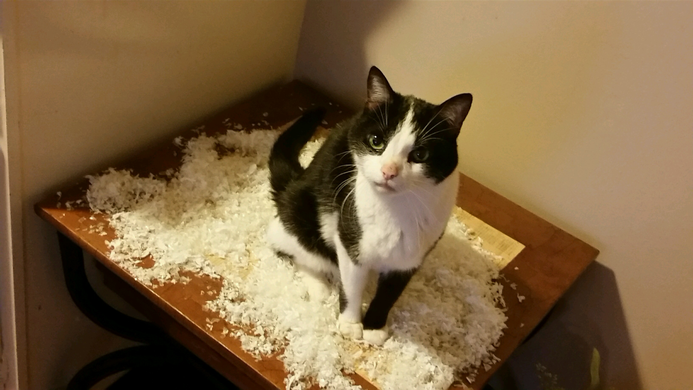

This is a blog post about my cat. He’s a cat. He runs to the carpet when he has to barf. It’s instinctive. I put Mardi Gras beads around his neck on Saturday night, then I accidentally locked him in my bedroom and came home twelve hours later to discover that had gotten tangled in them and was wearing them kind of like cat suspenders.
Here's a picture of him.

Going to New Orleans!
I’m going to New Orleans in a couple of weeks, but only for a few days. I’m pretty much going to see how much good destination food I can eat during that time. It’s not going to be pretty.
Here are some of the articles I've read to create my wishlist:
I thought I would find some inspiration by looking up some quotes about programming. Here are some of my favorites:
“Give a man a program, frustrate him for a day. Teach a man to program, frustrate him for a lifetime.” -- Waseem Latif
“Programming today is a race between software engineers striving to build bigger and better idiot-proof programs, and the Universe trying to produce bigger and better idiots. So far, the Universe is winning.” -- Rick Cook
“If debugging is the process of removing software bugs, then programming must be the process of putting them in.” -- Edsger Dijkstra
“Always code as if the guy who ends up maintaining your code will be a violent psychopath who knows where you live.” -- Martin Golding
“If builders built buildings the way programmers wrote programs, then the first woodpecker that came along would destroy civilization.” -- Gerald Weinberg
I'm a hoarder..
I thought I would practice making a table anyway, so I decided to use one to log some of the junk I found while cleaning out my purse.
Junk in the Trunk
Item
Lip Gloss
Empty Pack of Gum
Perfume
Toothbrush
Quantity
5
1.5
2
1
So exciting.
Words are super!
Notice how I fill this with words, so I can play with breaking up long chunks of text. Here are some more words. This sentence also contains many words, all of which have no real purpose other than to fill up space and make longer, more complex sentences and paragraphs. I think words are great. Words contain letters and form sentences that go on to make paragraphs which can turn into books someday if they try really hard and eat their vegetables. Word to your mother. We can dance if we want to. We can leave your friends behind, because your friends don't dance, and if they don't dance.. well, they're no friends of mine. I’ll think I’ll blockquote this quote about words:
“Don't use words too big for the subject. Don't say infinitely when you mean very; otherwise you'll have no word left when you want to talk about something really infinite.”
― C.S. Lewis
I guess I’ll add one more paragraph here for good measure, but I’ll cheat and basically copy that whole first paragraph. Here are some more words. This sentence also contains many words, all of which have no real purpose other than to fill up space and make longer, more complex sentences and paragraphs. I think words are great. Words contain letters and form sentences that go on to make paragraphs which can turn into books someday if they try really hard and eat their vegetables. Word to your mother. We can dance if we want to. We can leave your friends behind, because your friends don't dance, and if they don't dance.. well, they're no friends of mine.